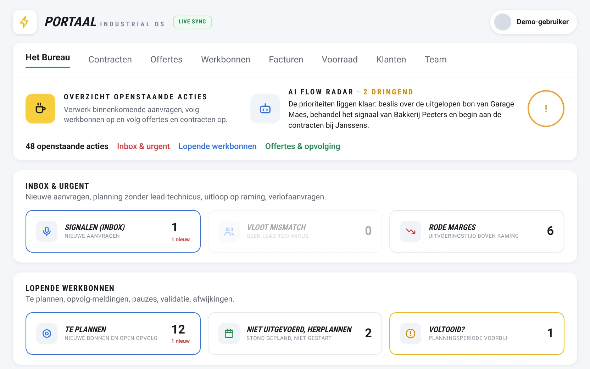
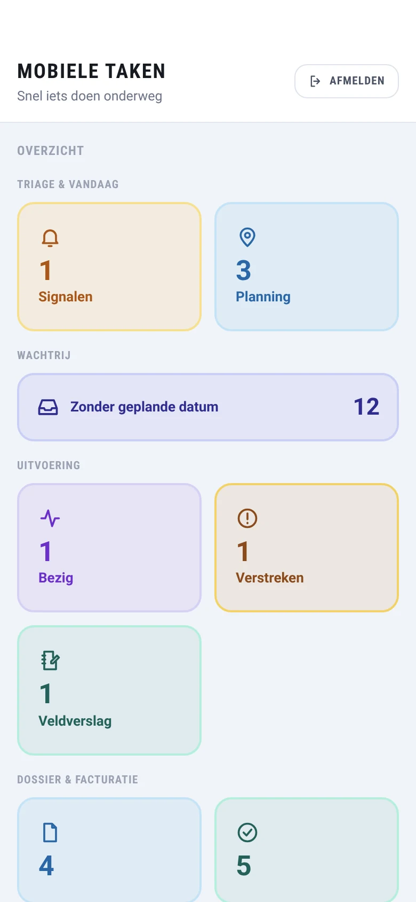

01
Operationeel portaal
- Probleem
- Planning, werkbonnen, mailbox en offertes zaten in aparte tools. Niemand had één beeld van wat er vandaag moest gebeuren.
- Gebouwd
- Eén portaal voor planning, werkbonnen, inbox en offertes, met AI die prioriteiten voorstelt en opvolging klaarzet.
- Resultaat
- Het team start de dag vanuit één overzicht en opvolging blijft niet meer liggen.

